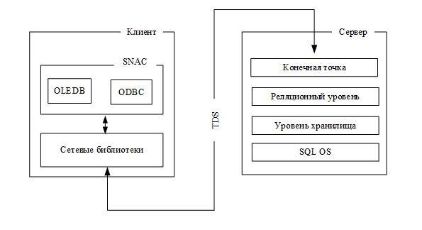

Edward & Albert / github:Tgjmjgj
База Данных - центральный элемент практически любой информационной системы.
Простейший случай базы данных - файл с данными. Однако в большинстве случаев применяется специализированное ПО - системы управления базами данных.
Среди способов организации современных БД выделяются два основных направления:
- Реляционные БД
- NoSQL БД
В основе реляционных БД лежит табличное представление данных. Связи между данными обеспечиваются при помощи отношений между таблицами.
Для обращения к данным в таких базах используется язык запросов SQL.
NoSQL базы могут иметь произвольное строение и принципы хранения данных (не реляционные, само собой). Некоторые из типов NoSQL БД:
- Хранилища "ключ-значение"
- Хранилища семейства колонок
- Документо-ориентированные БД
- БД на основе графов
Язык SQL - декларативный язык запросов. Впервые был разработан IBM в начале 1970-х. Является общепризнанным стандартом для доступа к реляционным БД.
Transact-SQL - язык, расширяющий SQL до уровня процедурного программирования, разработанный Microsoft для своей СУБД платформы Microsoft SQL Server.
SQL Server - система управления реляционными базами данных, от Microsoft. Первая версия была представлена в 1989 г. На момент 2017 года последней версией является SQL Server 2017. Поддерживается Windows (да ладно) и Linux.
Существует несколько изданий SQL Server 2017:
- Enterprise - для крупных систем (стоит много)
- Standart - для проектов средних размеров (стоит много, но уже дешевле)
- Developer - бесплатная Standart Edition, без возможности вывода в релиз
- Express - бесплатная компактная редакция для небольших веб и мобильных систем
- Web - специально для веб хостингов
- Compact - бесплатная версия для настольных Windows приложений (а также ASP.NET)
С точки зрения архитектуры СУБД SQL Server представляет собой набор служб Windows или Linux демонов. На Windows основными службами являются:Database Engine Управление реляционными БД Analysis Services Интеллектуальный анализ данных Integration Services Извлечение, преобразование и загрузка данных Reporting Services Управление отчетами Full-Text Search Управление полнотекстовым поиском SQL Server Agent Автоматизация административных задач SQL Server Browser Управление соединениями
SQL Server предполагает разработку клиент-серверных приложений.Взаимодействие клиента и сервера MSS:
Для взаимодействия клиентского приложения с сервером MSS слежит специальная DLL-библиотека, называемая SNAC (SQL Native Access Client) которая состоит из:
- провайдер OLEDB
- драйвер ODBC
Утилита MSMS предоставляет пользователю графический интерфейс, позволяющий администрировать и конфигурировать все компоненты сервера, а также содержит редактор для выполнения и отладки Transact-SQL запросов.
Для выполнения сценариев T-SQL в интерфейсе командной строки служит утилита SQLCMD.
Программа MSCM предназначается для конфигурирования, запуска и отсановки служб сервера, а также настройки сетевых протоколов.